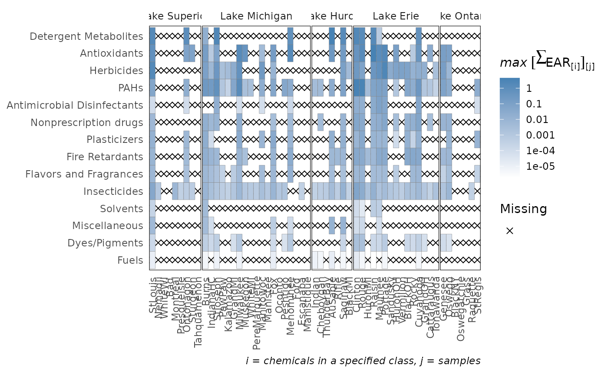
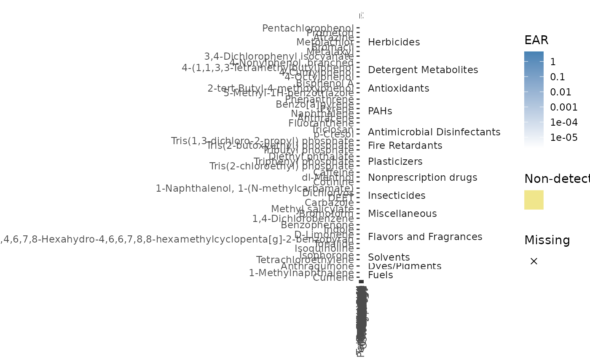
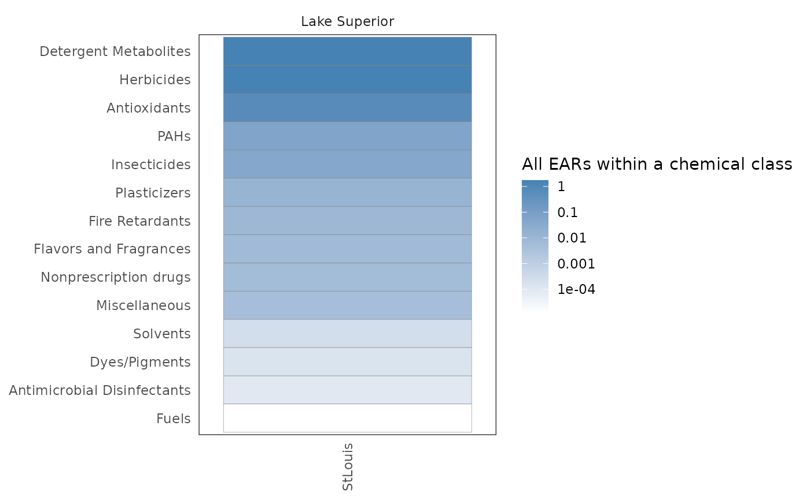

The plot_tox_heatmap function creates a heat (tile) map with sites on the x-axis,
a specified grouping on the y-axis (defined by the category argument), and color shading
defining the mean or maximum EAR. See "Summarizing the data" in the Introduction vignette:
vignette("Introduction", package = "toxEval") for a description on how the
EAR values are computed, aggregated, and summarized. The y-axis grouping can be "Biological",
"Chemical Class", or "Chemical". When specifying the "Chemical" option, a secondary y-axis
is automatically included to group chemicals into chemical class. The function computes
default breaks for the color scale to match the spread of the data, but breaks can also
be customized with the breaks argument.
This is a function where it may be ideal to create a custom order to the sites
(for example, west-to-east). See the above section "Custom configuration"
vignette("Introduction", package = "toxEval") for instructions on how to convert
the character vector sites to a factor with ordered levels.
plot_tox_heatmap( chemical_summary, chem_site, category = "Biological", breaks = c(1e-05, 1e-04, 0.001, 0.01, 0.1, 1, 10), manual_remove = NULL, mean_logic = FALSE, sum_logic = TRUE, plot_ND = TRUE, font_size = NA, title = NA, legend_lab = NA )
Arguments
| chemical_summary | Data frame from |
|---|---|
| chem_site | Data frame with columns SiteID, site_grouping, and Short Name. |
| category | Either "Biological", "Chemical Class", or "Chemical". |
| breaks | Numerical vector to define data bins and legend breaks. |
| manual_remove | Vector of categories to remove. |
| mean_logic | Logical. |
| sum_logic | Logical. |
| plot_ND | Logical. Whether or not to plot "Biological" groupings, "Chemical Class" groupings, or "Chemical" that do not have any detections. |
| font_size | Numeric value to adjust the axis font size. |
| title | Character title for plot. |
| legend_lab | Character label for legend. Default is NA which produces an automatic label. |
Details
If there are site/parameters (chemical/chemical class/biological grouping) combinations that don't have data, those areas are represented by an "X". If there are 0 values, they are considered "non-detects", and represented with a distinct color.
Examples
path_to_tox <- system.file("extdata", package="toxEval") file_name <- "OWC_data_fromSup.xlsx" full_path <- file.path(path_to_tox, file_name) tox_list <- create_toxEval(full_path) ACC <- get_ACC(tox_list$chem_info$CAS) ACC <- remove_flags(ACC) cleaned_ep <- clean_endPoint_info(end_point_info) filtered_ep <- filter_groups(cleaned_ep) chemical_summary <- get_chemical_summary(tox_list, ACC, filtered_ep) #Order the site_groupings: tox_list$chem_site$site_grouping <- factor(tox_list$chem_site$site_grouping, levels=c("Lake Superior", "Lake Michigan", "Lake Huron", "Lake Erie", "Lake Ontario")) #Order sites: sitesOrdered <- c("StLouis","Nemadji","WhiteWI","Bad","Montreal", "PresqueIsle","Ontonagon","Sturgeon","Tahquamenon","Burns", "IndianaHC","StJoseph","PawPaw","Kalamazoo","GrandMI", "Milwaukee","Muskegon","WhiteMI","PereMarquette","Manitowoc", "Manistee","Fox","Oconto","Peshtigo","Menominee", "Indian","Cheboygan","Ford","Escanaba","Manistique", "ThunderBay","AuSable","Rifle","Saginaw","BlackMI", "Clinton","Rouge","HuronMI","Raisin","Maumee", "Portage","Sandusky","HuronOH","Vermilion","BlackOH", "Rocky","Cuyahoga","GrandOH","Cattaraugus","Tonawanda", "Genesee","Oswego","BlackNY","Oswegatchie","Grass", "Raquette","StRegis") tox_list$chem_site$`Short Name` <- factor(tox_list$chem_site$`Short Name`, levels = sitesOrdered) plot_tox_heatmap(chemical_summary, tox_list$chem_site, category = "Chemical Class")plot_tox_heatmap(chemical_summary, tox_list$chem_site, category = "Chemical", legend_lab = "EAR")single_site <- dplyr::filter(chemical_summary, site == "USGS-04024000") plot_tox_heatmap(chemical_summary = single_site, chem_site = dplyr::filter(tox_list$chem_site, SiteID == "USGS-04024000"), category = "Chemical Class")plot_tox_heatmap(chemical_summary = single_site, chem_site = dplyr::filter(tox_list$chem_site, SiteID == "USGS-04024000"), category = "Chemical")